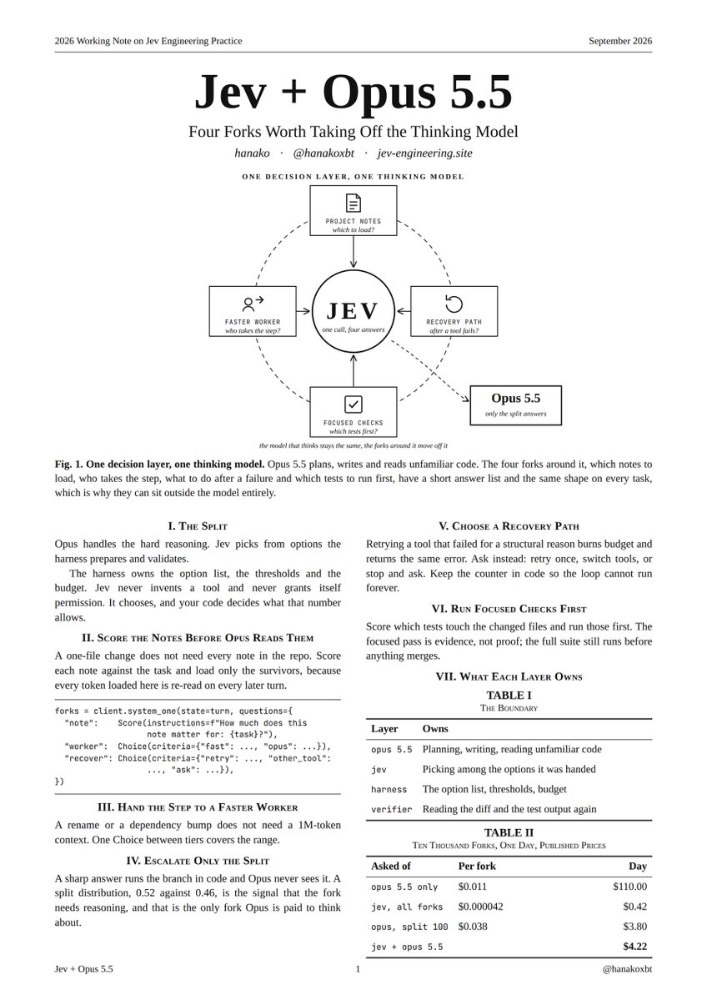

- 2026 年 Jev 工程实践工作笔记（Working Note）
- 作者：hanako（@hanakoxbt）· jev-engineering.site
- 日期：2026 年 9 月
- 源推文：https://x.com/hanakoxbt/status/2104575390773645712
- 相关完整指南（前一篇）：https://x.com/hanakoxbt/status/2101709924828934222 · 中文镜像：https://breakdimbo.github.io/zh-blog-mirrors/hanako-jev-engineering/
镜像说明。 推文写「Read the paper」。所附图片就是这篇「论文」：一页 2026 Working Note。它不是 TypeSafe 官方 arXiv 架构/RLCD 论文（TypeSafe 尚未发布此类论文）。下文由该截图的视觉/OCR 重建；OCR 不确定处宁短勿编。完整截图作为主图自托管。

图 1 — 一层决策，一个思考模型
中心： JEV — 一次调用，四个答案。
环绕 Jev 的四个分叉：
| 分叉 | 问题 |
|---|---|
| 项目笔记（Project Notes） | 加载哪些？ |
| 恢复路径（Recovery Path） | 工具失败之后怎么办？ |
| 聚焦检查（Focused Checks） | 先跑哪些测试？ |
| 更快的 worker（Faster Worker） | 这一步谁来做？ |
外侧： Opus 5.5 — 只处理「分裂」的答案。
Opus 5.5 负责规划、写作，以及阅读不熟悉的代码。环绕它的四个分叉——加载哪些笔记、谁来执行这一步、失败后做什么、先跑哪些测试——答案列表都很短，且在每项任务上形状相同，因此可以完全放在模型之外。
思考的模型保持不变；环绕它的分叉从它身上卸下来。
I. 拆分（The Split）
Opus 负责困难推理。Jev 从 harness 预先准备并校验好的选项中挑选。harness 拥有选项列表、阈值与预算。Jev 从不发明工具，也从不给自己授权。它只做选择；你的代码决定这个数字允许什么。
II. 在 Opus 读笔记之前先打分
改一个文件，并不需要加载仓库里的每一份笔记。对照任务给每份笔记打分，只加载幸存者——因为这里加载的每个 token，在后续每一轮都会被重新阅读。
forks = client.system_one(state=turn, questions={
"note": Score(instructions=f"How much does this note matter for: {task}?"),
"worker": Choice(criteria={"fast": ..., "opus": ...}),
"recover": Choice(criteria={"retry": ..., "other_tool": ..., "ask": ...}),
})III. 把步骤交给更快的 worker
重命名或 bump 依赖，不需要 100 万 token 的上下文。在档位之间做一次 Choice，就能覆盖这个范围。
IV. 只把「分裂」升级给 Opus
尖锐的答案由代码分支直接执行，Opus 根本看不到。分裂的分布——例如 0.52 对 0.46——才是「这个分叉需要推理」的信号；也只有这类分叉，才值得付钱让 Opus 思考。
V. 选择一条恢复路径
对因结构性原因失败的工具盲目重试，只会烧预算并返回同样的错误。改为询问：重试一次、换工具，还是停下问人。计数器放在代码里，这样循环就不会永远跑下去。
VI. 先跑聚焦检查
给「触及已改文件」的测试打分，先跑这些。聚焦通过是证据，不是证明；合并前仍要跑完整测试套件。
VII. 每一层各自拥有什么
表 I — 边界
| 层 | 拥有 |
|---|---|
| opus 5.5 | 规划、写作、阅读不熟悉的代码 |
| jev | 在交给它的选项中挑选 |
| harness | 选项列表、阈值、预算 |
| verifier | 再次阅读 diff 与测试输出 |
表 II — 一万次分叉，一天，公开标价
| 询问对象 | 每次分叉 | 一天 |
|---|---|---|
| 仅 opus 5.5 | $0.011 | $110.00 |
| jev，全部分叉 | $0.000042 | $0.42 |
| opus，分裂约 100 次 | $0.038 | $3.80 |
| jev + opus 5.5（合计） | $4.22 |
与推文叙述对齐：仅分叉一项，从约 $110/天 降到有 Jev 接手后约 $4。
相关链接（不是推文里的「那篇论文」）
- Hanako 前一篇完整指南：https://x.com/hanakoxbt/status/2101709924828934222
- TypeSafe 官方发布：https://typesafe.ai/blog/introducing-system-one-models-and-jev
- 课程 / 营销站：https://jev-engineering.site
- 社区 arXiv（安全/评测向；可选；不是推文所指论文）— Just Ask Jev（RLCDAlignBench）
- 社区 arXiv — JevAdvBench
- 社区 arXiv — Decision Hijacking